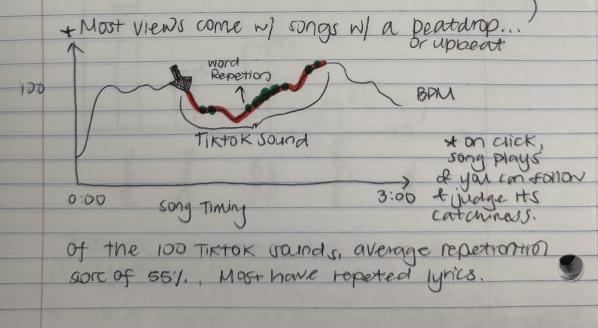
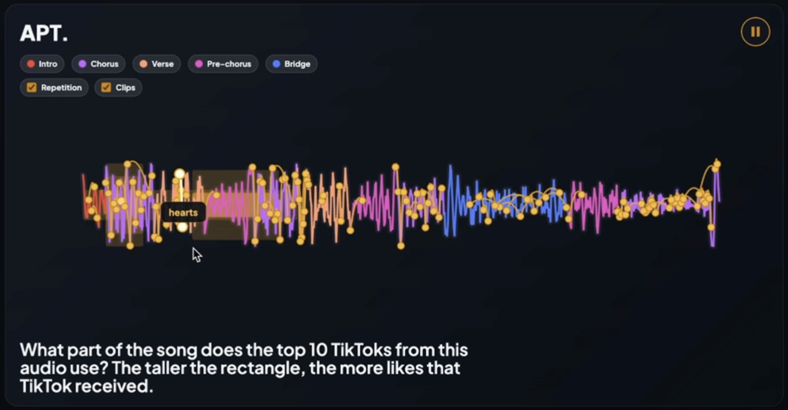

A5.5 Write up
Introduction
TikTok has redefined music, turning full compositions into fleeting fifteen-second "moments." This raises the question: is there a predictable pattern to TikTok virality, or is it just random? Looped: Inside the Audio Fingerprint of TikTok's Biggest Songs addresses this by analyzing the top 20 TikTok tracks of 2025 across 200 videos. We aim to see if these viral hits share specific patterns, examining how audio and content are utilized to better understand modern digital success.
Methodology
We started with the top 20 TikTok songs of 2025 from TikTok's trend rankings, collecting data from the top 10 videos for each - 200 TikToks total. For each video, we recorded view counts, likes, posting dates, clip timestamps, BPM, repetition ratios, genre, release year, and content category.
Yet, the manual process had limitations. Content categories were not mutually exclusive as a video could belong to multiple categories, and assignments were ultimately subjective judgments. Also, raw view counts are misleading when comparing videos posted years apart, since older videos have had more time to accumulate views. We initially considered engagement ratio (likes divided by views) as a normalized alternative, but found it confusing. We ultimately used raw view count as the primary measure of a video's reach.
Early analysis attempting to correlate virality with variables like BPM, clip placement, and repetition ratio did not produce strong findings. We shifted the project's focus to comparing two broader patterns of virality: one-hit wonders and long-lasting trends, emphasizing artistic design and exploration. This categorization created a more intuitive framework and avoided overly deterministic claims about virality.
Design
The decision we made early on was that the project should not feel like a traditional dashboard. TikTok itself is fast and immersive; users often fall into endless scrolling without consciously analyzing what they are seeing. Because of this, we wanted the visualization to reveal information gradually through scrollytelling.
Users first land on a timeline that shows how songs spread over time, then move into more focused interactive views that compare one-hit wonders and longer-lasting trends. We intentionally used dark backgrounds and vibrant colors to create an interface that matches TikTok's aesthetics.
The second visualization allows users to better understand our "song fingerprints" through a tutorial-like walkthrough. In the latter half of the second visualization, users are able to see the TikTok videos alongside the source audio. As the full song plays, videos appear at their corresponding clip timestamps, letting users observe the content directly rather than relying solely on our categorical classifications. This design decision acknowledged the subjectivity of manual classification by exposing the raw material, and users could form their own interpretations of why a particular clip circulated. Each song is also represented by a radar chart encoding audio characteristics (from https://tunebat.com/) designed to communicate the "feeling" of songs.
Interaction encodings centered on hover states, filtering, and progressive exploration: users can isolate song groups, sort by content category, and toggle between virality types.
Throughout the design process, we experimented with more technically complex approaches such as waveform analysis, BPM timelines, and Spotify synchronization data. However, because many of these visualizations distracted from the central narrative or introduced unnecessary complexity, we had to remove most of them or combine them to make the whole visualization feel more cohesive.


Implementation
Our final project was built as a self-hosted website using D3.js for custom visualizations and interactions, rather than Observable, to support more customized techniques. Figma was used for prototyping and interface iteration. Data cleaning and organization were handled manually through spreadsheets and CSV processing. Performance issues were minimal due to the relatively small dataset size.
Discussion
During the open table session, classmates strongly favored the interactive video playback feature and enjoyed watching the actual TikToks. We observed that people gravitated toward songs they already knew, especially APT, and found the radar chart encodings for attributes like danceability and energy intuitive. Users initially expected a clear "formula" for virality, but became more interested in comparing different trend types. Ultimately, the project became a fun exploration rather than a system proving a strict formula. In the final iteration, we combined the last two visualizations, merging views with similar data into a more fluid experience.
Future Work
Future work includes expanding the project by analyzing a much larger historical dataset and incorporating additional platform metrics like creator follower counts and subscriber behavior. We are also interested in developing a more advanced scrollytelling experience and experimenting with automated audio analysis techniques (e.g., waveform or spectrogram processing). Expanding the project across platforms like Spotify or Instagram Reels could also reveal how different recommendation systems shape music consumption.
Acknowledgements or References
Special thanks to all critics for feedback.
Data on each song's danceability, happiness, energy levels, and BPM was sourced from Tunebat.